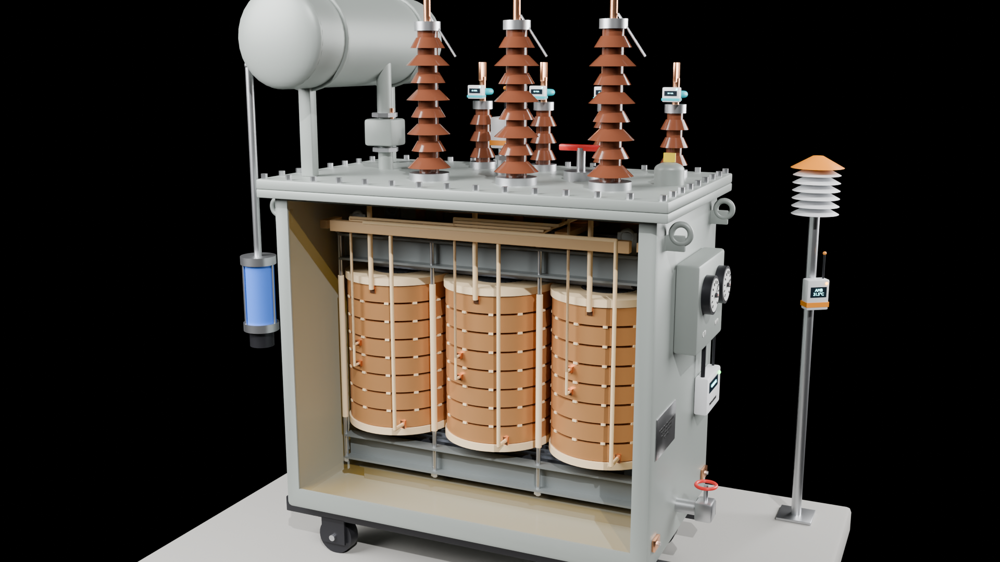
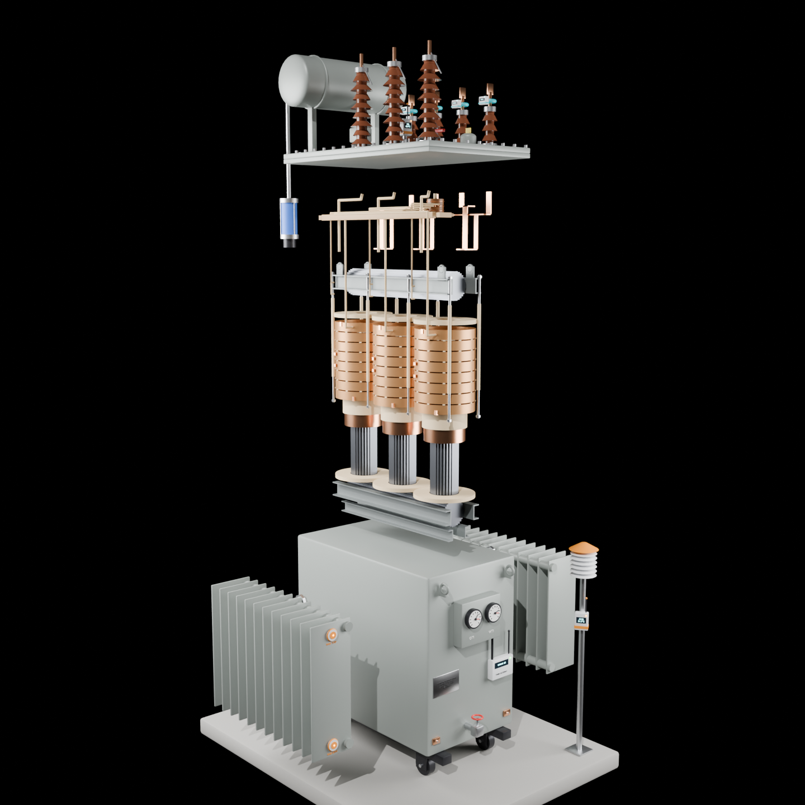
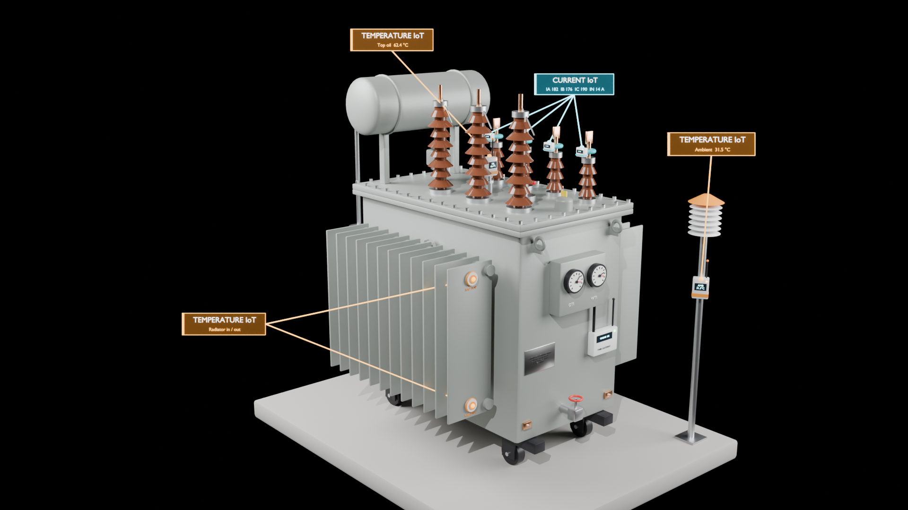

Seven modules turn the raw readings into one of five standard outputs: Normal, Predicted maintenance, Warning, Maintenance required and Critical. A module predicts maintenance when its trend reaches a limit within the 30 min lead time. The Health Engine combines the seven outputs into a score, a priority and an action. It is rule-based for now; an ML model can replace it with the same inputs and outputs.
When this page is served by the Digital Transformer Twin API, it posts a reading every 2 s to /api/v1/data/reading. The API's three rules then decide modules 1, 2 and 5 (current and voltage instrument error, oil-level predictive maintenance) and keep their alerts in PostgreSQL; those rows say "checked by API". The other four modules run on the page until the API has rules for them. For the oil trend, each simulated second is stamped as one minute.
| # | Module | Inputs | Metric | Warning | Critical / maintenance |
|---|---|---|---|---|---|
| 1 | Current measurement health | IA–IC vs IA_REF–IC_REF | E = |I − Iref| / Iref | – | Emax > 1% → maintenance |
| 2 | Voltage measurement health | VA–VC vs VA_REF–VC_REF | E = |V − Vref| / Vref | – | Emax > 1% → maintenance |
| 3 | Current IoT | IA, IB, IC | Imax / 841 A, dI/dt | > 90% | > 100% |
| 4 | Voltage IoT | VA, VB, VC | |V − 250 V| / 250 V, dD/dt | > ±5% | > ±10% |
| 5 | Oil-level IoT | Oil level | dO/dt, time to minimum | < 35% | < 20% |
| 6 | Top-oil temperature IoT | Top oil, ambient | Toil, rise, time to alarm | > 95 °C or rise > 40 °C | > 105 °C (trip) |
| 7 | Winding temperature IoT | Windings A–C, ambient | Thot − Tamb, dT/dt | rise > 40.5 °C | rise > 45 °C |
Drag the slider to lift the cover, pull the core and coils out of the tank and take the windings off the limbs. Proportions follow utility specifications for distribution transformers of this size.


